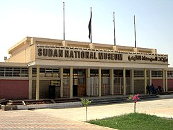
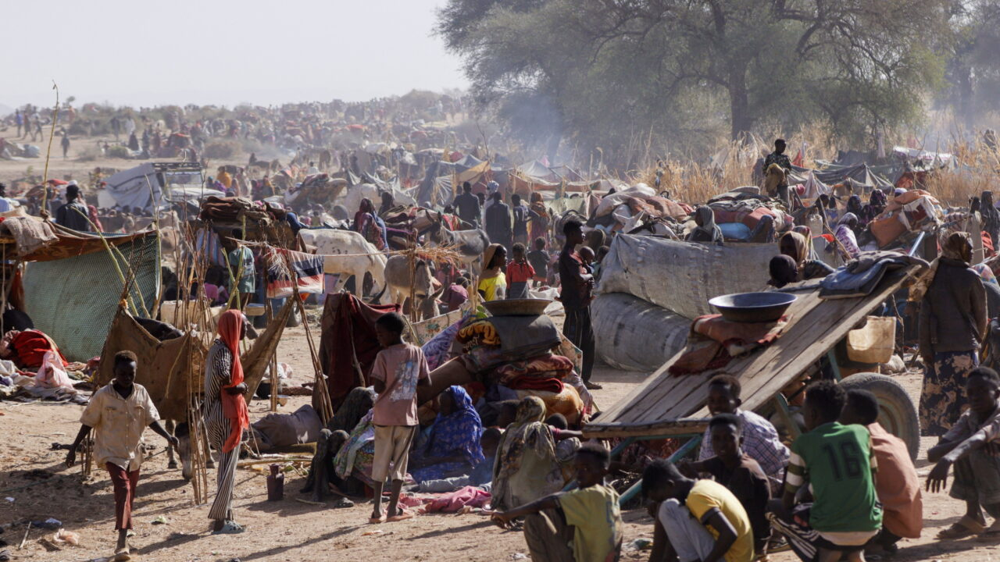
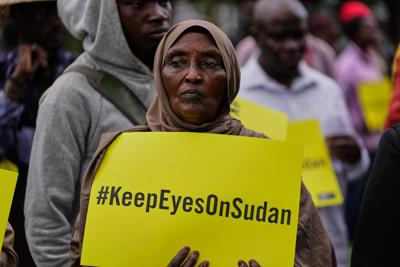
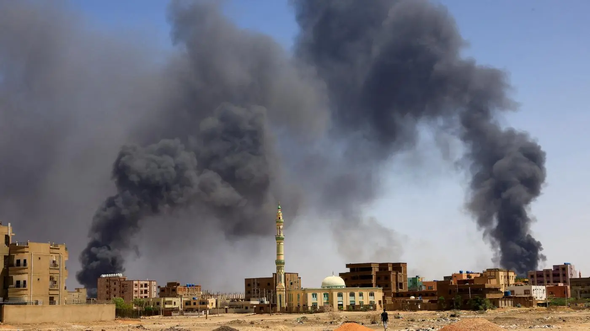

Sudanese Civil War
An ongoing armed conflict that erupted in April 2023 between the Sudanese Armed Forces (SAF) and the paramilitary Rapid Support Forces (RSF), devastating the nation.
Political Background (2019–2023)
The roots of the current war lie in the complex power struggles following the 2019 Sudanese Revolution, which overthrew longtime dictator Omar al-Bashir. Following the revolution, a fragile joint civilian-military transitional government was established.
In October 2021, the military and paramilitary forces collaborated in a coup d'état to oust the civilian leadership. The two main figures of this junta were General Abdel Fattah al-Burhan (commander of the Sudanese Armed Forces) and Mohamed Hamdan Dagalo, known as "Hemedti" (commander of the Rapid Support Forces).
- Rising Tensions: By late 2022, international pressure pushed for a return to civilian rule. A key requirement was the integration of the RSF into the regular armed forces.
- The Breaking Point: Al-Burhan and Hemedti fiercely disagreed over the timeline of this integration and who would retain ultimate command, leading to a massive military buildup by the RSF in Khartoum and other cities in early April 2023.
Outbreak of War (April 2023)
On the morning of April 15, 2023, heavy urban combat broke out in the capital city of Khartoum and across the country. The RSF launched sudden attacks on key government installations, military bases, and the presidential palace.
Unlike previous Sudanese conflicts that were localized in peripheral regions (like Darfur), this war turned the densely populated capital into an active warzone. The SAF relied heavily on its air force superiority to bomb RSF positions in residential areas, while the RSF utilized highly mobile ground tactics to embed themselves within the city infrastructure. The conflict quickly spread west into the Darfur and Kordofan regions.
Intelligence & Image Gallery




Current Situation & Humanitarian Crisis
The conflict has plunged Sudan into one of the most severe humanitarian disasters in modern history. Peace talks hosted in Jeddah by the US and Saudi Arabia have repeatedly stalled, with multiple ceasefire agreements broken by both sides within hours.
- Mass Displacement: According to the UN, over 10 million people have been internally displaced, making it the largest internal displacement crisis globally. Millions more have fled as refugees to neighboring Chad, Egypt, and South Sudan.
- Ethnic Cleansing in Darfur: The war has reignited ethnic violence in Darfur. The RSF and allied Arab militias have been accused of conducting systematic massacres and ethnic cleansing against non-Arab groups, particularly the Masalit people.
- Famine & Infrastructure Collapse: The healthcare system in conflict zones has completely collapsed. Aid agencies warn of catastrophic, widespread famine as agricultural supply chains and food imports have been deliberately disrupted by the fighting.